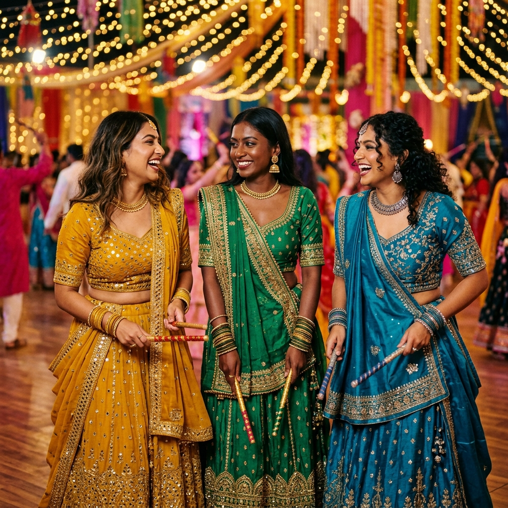

Last updated: July 17, 2026
Navratri 2026 Colour Calendar: Which Shade to Actually Wear for Your Indian Skin Tone
Quick answer: Knowing "Day 2 is yellow" is only half the battle. Mustard yellow flatters warm-undertone skin; lemon yellow works for cool undertones. This guide maps all 9 Navratri day-colours to the exact shade variation that suits your fair, wheatish, or dusky skin — so you show up to garba glowing, not washed out.

Why "Wear Yellow" Isn't Enough Advice
Every year, the same 9-day Navratri colour chart makes the rounds. And every year, thousands of women follow it literally — only to feel flat or washed out in the day's assigned colour.
The problem isn't the colour itself. It's that "yellow" covers everything from pale butter to deep ochre to neon lime. These shades behave completely differently on different skin tones.
Three factors decide which shade works for you:
- Skin depth — How light or dark your natural skin tone is (fair, wheatish, dusky)
- Undertone — Whether your skin reads as warm (golden/olive), cool (pink/blue), or neutral
- Chroma — Whether saturated, jewel-toned shades or softer, muted shades suit your natural clarity
Once you know these three things, you can adapt any day's colour to a shade that works for you.
The 9-Day Navratri Colour Guide by Skin Tone
Day 1 — Royal Blue (Pratipada)
| Skin Tone | Recommended Shade | Why It Works |
|---|---|---|
| Fair (cool) | Sapphire or icy periwinkle | Creates sophisticated contrast without washing fair skin |
| Fair (warm) | Cobalt or French blue | The warm base in cobalt balances golden undertones |
| Wheatish (warm) | Royal blue or indigo | Rich depth that makes warm wheatish skin glow |
| Wheatish (cool) | Slate blue or steel blue | Harmonises with pink-cool undertones elegantly |
| Dusky (any) | Electric blue or navy | Deep, saturated blues create stunning contrast on deep skin |
What to avoid: Baby blue and powder blue — these muted pastels tend to make most Indian skin tones look grey.
Day 2 — Yellow (Dwitiya)
| Skin Tone | Recommended Shade | Why It Works |
|---|---|---|
| Fair (cool) | Lemon yellow or buttercup | Bright yellow pops without overwhelming fair cool skin |
| Fair (warm) | Pastel butter or pale gold | Soft warmth harmonises with golden fair undertones |
| Wheatish (warm) | Mustard or turmeric yellow | The most flattering yellow for warm wheatish skin — iconic |
| Wheatish (cool) | Marigold or amber | Warm-based but rich, works beautifully on cool wheatish |
| Dusky (any) | Deep ochre or golden yellow | Rich, saturated yellows glow against deep complexions |
What to avoid: Neon yellow — it washes out every Indian skin tone under festival lighting.
Day 3 — Green (Tritiya)
| Skin Tone | Recommended Shade | Why It Works |
|---|---|---|
| Fair (cool) | Mint or jade green | Fresh, cool greens complement fair cool undertones |
| Fair (warm) | Pistachio or lime | Warm-based light greens flatter golden fair skin |
| Wheatish (warm) | Olive or forest green | Earthy greens are universally stunning on warm wheatish |
| Wheatish (cool) | Emerald or teal | Cool-leaning jewel greens elevate cool wheatish beautifully |
| Dusky (any) | Emerald or deep hunter green | Jewel greens create electrifying contrast on deep skin |
Day 4 — Grey (Chaturthi)
Grey is the hardest Navratri colour for most Indian skin tones because it's inherently low-contrast.
| Skin Tone | Recommended Shade | Why It Works |
|---|---|---|
| Fair (cool) | Silver-grey or platinum | Icy greys complement cool fair skin with an ethereal look |
| Fair (warm) | Warm taupe or greige | Avoids the ashy effect of cool grey on warm skin |
| Wheatish (warm) | Charcoal with gold embroidery | Deep charcoal + gold embellishment adds the warmth grey lacks |
| Wheatish (cool) | Steel grey or gunmetal | Cool greys suit cool undertones — go bolder in shade |
| Dusky (any) | Deep charcoal or slate | The darker the grey, the better it reads on deep skin |
Pro tip for grey day: Let your dupatta or blouse do the work — pair a grey chaniya with a vibrant emerald or mustard blouse to rescue the look.
Day 5 — Orange (Panchami)
| Skin Tone | Recommended Shade | Why It Works |
|---|---|---|
| Fair (cool) | Peach or soft apricot | Gentle orange-adjacent shades avoid overwhelming fair cool skin |
| Fair (warm) | Coral or warm terracotta | Warmth in coral sings against golden fair undertones |
| Wheatish (warm) | Burnt orange or rust | The most photogenic orange for warm wheatish skin |
| Wheatish (cool) | Tangerine or mango orange | Brighter orange brings life to cool wheatish undertones |
| Dusky (any) | Deep saffron or amber orange | Saturated warm oranges are electric on deep Indian skin |
Day 6 — White (Shashthi)
White is tricky — it's the most unforgiving colour in the collection.
| Skin Tone | Recommended Shade | Why It Works |
|---|---|---|
| Fair (cool) | Pure white or stark white | Works well — use cool-toned embroidery (silver, icy blue) |
| Fair (warm) | Ivory or cream white | Warm whites prevent fair skin from looking washed out |
| Wheatish (any) | Off-white with gold embroidery | The golden embellishment creates the contrast white alone lacks |
| Dusky (any) | Bright white (go bold) | High contrast between deep skin and crisp white is stunning |
Day 7 — Red (Saptami)
| Skin Tone | Recommended Shade | Why It Works |
|---|---|---|
| Fair (cool) | Berry red or raspberry | Cool-based reds complement fair cool undertones |
| Fair (warm) | Cherry red or tomato red | Warm-based reds add drama without clashing |
| Wheatish (warm) | Maroon or wine | Deep, warm reds are universally flattering on wheatish skin |
| Wheatish (cool) | Cranberry or ruby | Cool-leaning reds complement wheatish cool undertones |
| Dusky (any) | Deep crimson or scarlet | Rich, saturated reds look absolutely regal on deep skin |
Day 8 — Peacock Blue/Green (Ashtami)
| Skin Tone | Recommended Shade | Why It Works |
|---|---|---|
| Fair (cool) | Turquoise or aqua | Cool teal creates an elegant, luminous look on fair cool skin |
| Fair (warm) | Teal with gold embroidery | Warm gold embellishment balances the cool teal for warm skin |
| Wheatish (any) | Peacock blue or deep teal | The most dramatic and flattering shade for wheatish skin tones |
| Dusky (any) | Bold peacock or electric teal | Jewel tones against deep skin = absolute showstopper |
Day 9 — Pink/Purple (Navami)
| Skin Tone | Recommended Shade | Why It Works |
|---|---|---|
| Fair (cool) | Lavender or lilac purple | Soft purple harmonises beautifully with fair cool skin |
| Fair (warm) | Rose pink or blush | Warm pinks complement golden fair undertones |
| Wheatish (warm) | Fuchsia or hot pink | Bold pinks look vivid and alive on warm wheatish skin |
| Wheatish (cool) | Plum or deep orchid | Cool deep purples are stunning on cool wheatish tones |
| Dusky (any) | Hot pink or deep magenta | Saturated pinks and magentas are electric on deep Indian skin |
Garment Picks for Garba Night
Colour is just one dimension. The garment silhouette matters for 3+ hours of dancing:
Chaniya Choli: The best garba garment — full circle skirt handles movement perfectly. Keep colour in the chaniya, contrast in the blouse/choli.
Anarkali: Elegant but less movement-friendly. Choose mid-weight fabrics like georgette or viscose — heavy velvet will overheat you on the dance floor.
Palazzo Set: Great compromise — wide-leg palazzo trousers move freely. Works well for day events and casual garba gatherings.
Fabric tip: For 3+ hours of garba, avoid velvet, heavy silk, and thick cotton. Georgette, chiffon, and rayon breathe and move best.
Quick Reference: What to Avoid on Every Navratri Day
| Skin Tone | Always Avoid |
|---|---|
| Fair skin | Neon shades, very pale neutrals (beige, taupe) |
| Wheatish/warm | Cool pastels (lavender, icy blue, mint) |
| Wheatish/cool | Very warm earthy shades worn head-to-toe |
| Dusky skin | Overly muted or washed-out shades — go bold |
Not Sure of Your Undertone?
Before Navratri, take 2 minutes to identify your undertone:
1. Vein test: Check your inner wrist in natural light. Greenish veins = warm. Blue/purple = cool. Both = neutral.
2. Gold vs. silver test: Hold gold and silver jewellery near your face. Gold makes warm undertones glow; silver flatters cool undertones.
3. White t-shirt test: Wear a white tee. Does your skin look yellowish/olive next to it? Warm. Pinkish? Cool.
Once you know your undertone, every Navratri day becomes easy — just pick the right shade variation of that day's colour.
Already know your undertone? Use the [Colourity app](https://colourity.com) to scan your face and get your exact colour palette — so every day of Navratri, you're picking shades already pre-matched to your specific complexion.
Frequently Asked Questions
Q: What if I hate the day's assigned colour entirely?
Use it as an accent — a dupatta, blouse, or belt in the day colour while wearing a complementary main shade.
Q: Can I wear the same outfit on multiple days?
Yes — mix and match blouses and dupattas in different day-colours with a neutral chaniya.
Q: Does undertone matter more than skin depth?
Both matter, but undertone is more critical for which specific shade to choose. Skin depth tells you how saturated/bold to go.
Q: I have neutral undertones — which shade should I choose?
Neutral undertones are lucky — you can pull from both warm and cool recommendations. Focus on skin depth: lighter skin → lighter shades work; deeper skin → go more saturated.